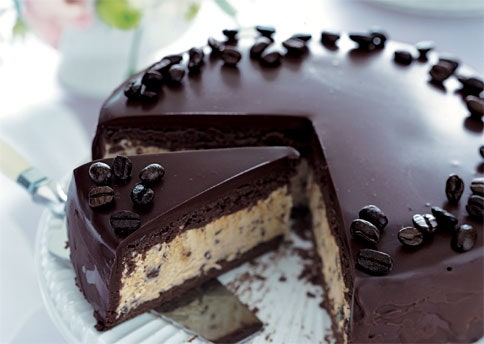

Chocolate Ganache Cake
Incredible sweet chocolate ganache cake

Yields: 8 - 10 servings
Prep time: 30 minutes
Total time: 2 hours 45 minutes
For the cake:
- Nonstick baking spray
- 3/4 c. all-purpose flour
- 1 c. granulated sugar
- 1/3 c. unsweetened cocoa powder
- 1 tsp. baking soda
- 1/2 tsp. baking powder
- 3/4 tsp. salt
- 1/2 c. buttermilk
- 1/4 c. canola oil
- 1 1/2 tsp. vanilla extract
- 1/2 c. freshly brewed strong coffee
For the chocolate ganache:
- 1 c. bittersweet chocolate chips
- 1 tbsp. salted butter
- 1 c. heavy cream
- 1 1/2 tbsp. light corn syrup
For the chocolate ganache:
- 1/2 c. peanut butter chips
- 1 tbsp. salted butter
- Preheat the oven to 350°. Spray a 9-inch round cake
pan with nonstick baking spray. Line the bottom of the
pan with parchment paper and spray with nonstick baking
spray. Set the pan aside.
- Sift the flour, sugar, cocoa powder, baking soda,
baking powder, and salt in a large bowl; whisk to
combine. In a separate large bowl, whisk together the
buttermilk, oil, egg and vanilla. Gradually add the flour
mixture to the buttermilk mixture, and whisk until well
combined. Add the coffee and whisk just until evenly
incorporated.
- Transfer the batter to the prepared pan and bake for
28 to 32 minutes, until a toothpick comes out clean. Let
the cake cool in the pan for 15 minutes. Invert onto a
cooling rack to cool completely, 1 hour.
- For the chocolate ganache: In a 4-cup heat-proof
liquid measuring cup with a spout, combine the chocolate
chips and 1 tablespoon butter. In a small saucepan,
bring the cream and light corn syrup to low simmer over
medium-low heat. Pour the cream mixture over the chocolate
mixture and let it stand for 2 minutes. Stir until very smooth.
Set aside until cooled slightly, but still pourable (about 105°),
2 to 5 minutes.
- While chocolate ganache is cooling, set the cake, still on
the wire rack, in a rimmed baking sheet.
- Once the ganache has cooled slightly, pour it over the cake,
making sure to completely cover the top and sides, letting any
excess run off into the rimmed baking sheet. Smooth the top of
the cake using a large offset spatula.
- Immediately transfer the cake to the refrigerator to harden
the ganache, 30 minutes. Using 2 large spatulas, carefully
transfer the cake to a serving platter. Serve slightly chilled
or at room temperature.
- For the peanut butter ganache swirl (optional): While the
chocolate ganache is cooling in Step 4, combine the peanut
butter chips and butter in a small microwavable bowl.
Microwave on high until mixture is melted and smooth,
30 seconds, stopping to stir after 15 seconds. Transfer peanut
butter mixture to a small Ziploc bag with a 1/4-inch hole cut
in the corner. Immediately after covering the cake with warm
ganache in Step 6, pipe 6 equally spaced lines of the peanut
butter mixture across the top of the cake. Using a paring knife
or skewer, drag the tip through the peanut butter and ganache
in 7 evenly spaced lines perpendicular to the piped peanut
butter, alternating the direction of each line. Proceed with
Step 7 and cool cake as directed.